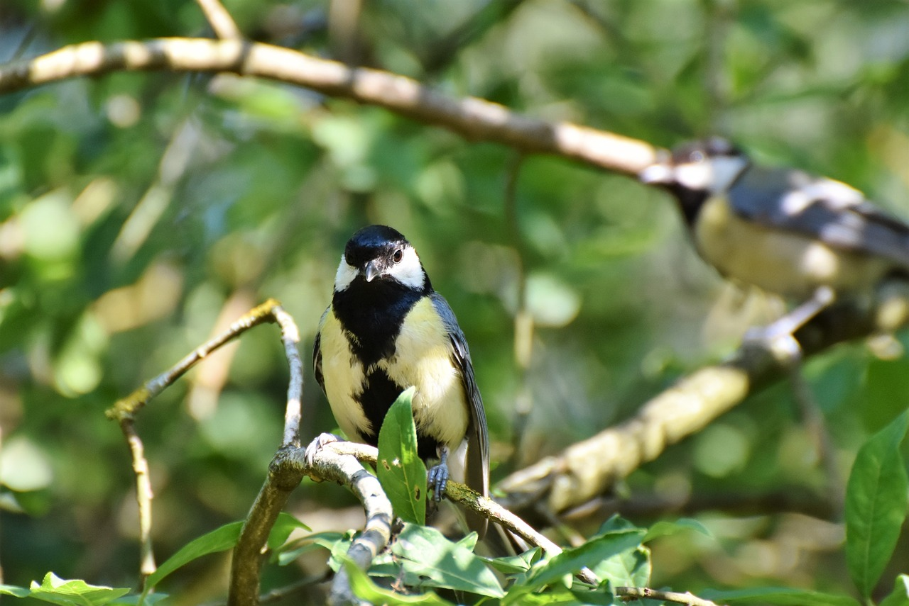

5月16日，又浪费了半个周末，为什么说是浪费呢？大概是与往常过的不一样吧。今天整理物品的时候，翻出了几本大学课本，里面还夹杂着几张习题纸，就是这样简单的场景，我便看了一下午。说起来也真有意思，我一直都有个习惯，偶尔翻到很多年前的东西，比如一本作业，一张试卷、亦或者一件衣物……，我都会在那端详许久，慢慢地忘记了原本的工作。是感慨？是回忆？嗯，好像有那么一点回忆，感慨倒是谈不上，大概是在思考，那个时候的我在解这道题、写这篇文章的时候到底什么样子的呢？怀着一种怎样的心态呢？有没有想过有一天我会变成现在这个样子，安静的想着从前的我？
是的，很多时候我便迷失在这种漫无边际的思考中，思考从前、思考现在以及未来，如果再给我一次机会，我还能不能原样复制我的人生？随后便是一阵电话铃声、窗外鸟叫声，或者楼下婴儿的啼哭声将我带回现实，依依不舍地放下旧时光，脑袋中闪过一句话：“这就是时间”！终究，我也说不清楚。
时间过的太快，我在为生活奔波的同时，也逐渐忘记了自我。我记得老板的要求、记得父母的电话、记得朋友的生日……，却总想不起来自己是如何从过去走到现在。也许我会反驳：“我记得很清楚啊，我是14年上的大学，18年参加的工作……，然后便是现在”，没错，是这样，可这漫长的岁月仅用这几个字去描述未免也太空洞了。认识自我是一件不容易的事，我可以从生理学、心理学、经济学等很多方面来度量自己，即使这样，也仅仅是测算出一些冰冷的指标，或者是帮别人了解了自己。更深层次的自我感知是一种模糊的、真实的、祥和的感觉，就像时隔多年，拿起儿时的玩具一点也不陌生一样。老实说，很多东西若不是放在家里，或者写着我的名字，我都不敢相信它是我的，即使是我亲手采办的。
兴许是我太忙，或者有更重要的事，总是在很多事情上挂个标号，说“这是我的”，然后就匆匆离去，以至于很长时间对周围的人或物，都难以在脑海中清晰的刻画出来。这就好比我能随口说出好几个同事的名字、性格，却想不起来他们的模样。身体为了存活在不停的奔波，灵魂早已不堪重负，被远远甩在身后，这个城市中，有太多的追求与失落。我在想，是不是应该再多花一些时间，仔细端详一下身边的事物，就像新买的衣服上花纹样式、楼下花坛有几株百合、窗外的小鸟喜欢站在哪根树枝上，诸如此类的。
我已经这样做了，也许很多年后，当我再次跨越时空的时候，窗外的树便会帮我想起一切：“那年夏天，一个北漂的年轻人，手里拿着泛黄的书本，斜靠在椅子上，想着另一个夏天的故事。夕阳透过窗户，屋内阴影交错，他把手伸进阳光中，盯着手背的寒毛，嘴角露出久违的微笑。窗外传来几声鸟叫，他回过神来，决定记录下这一切。”

庚子年四月廿四 — 北京
插图来自如下网站：
[1] https://www.pexels.com/zh-cn/
[2] https://pixabay.com/